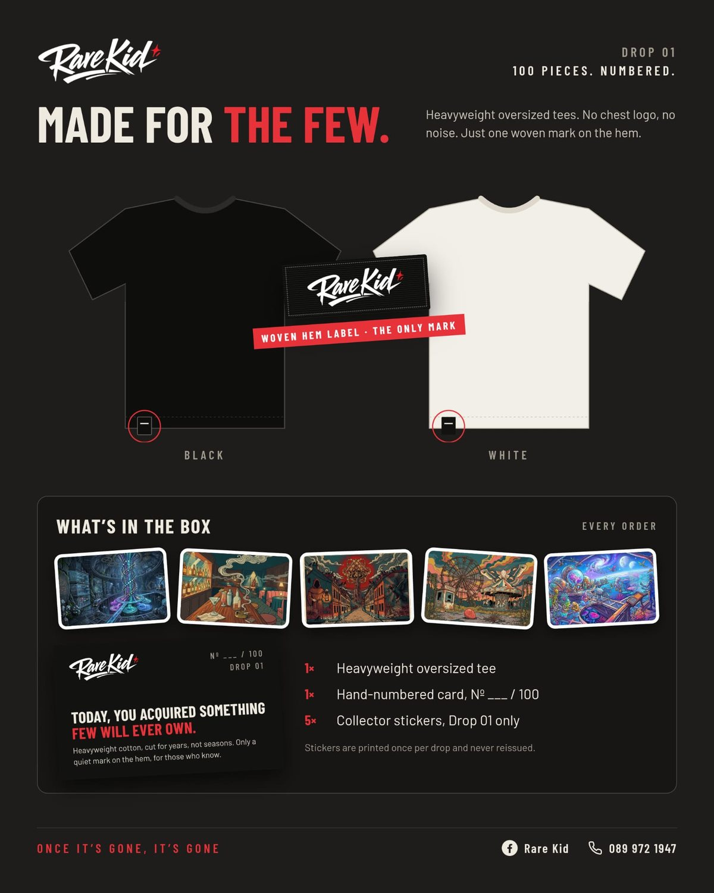

Heavyweight oversized t-shirts in Ireland: what 250gsm really means

You've felt it before. You pick up a tee, and it's thin, soft in the wrong way, and you already know it'll twist at the seams after three washes. Then you pick up a heavyweight t-shirt and it feels different: dense, structured, like it was made to last.
That difference has a number. This guide explains what GSM means, why a 250gsm heavyweight oversized tee is worth paying more for, how it should fit, and what to check before you buy one in Ireland.
What does GSM mean on a t-shirt?
GSM stands for grams per square metre. It's the weight of the fabric before it's cut and sewn. The higher the number, the more cotton is packed into every part of the shirt.
Brands use slightly different cut-offs, but this is roughly how it breaks down:
| Weight | Typical GSM | What it feels like |
|---|---|---|
| Lightweight | Under ~160gsm | Thin, clingy, often see-through in white |
| Midweight | ~160–200gsm | Standard high-street tee |
| Heavyweight | ~220gsm and up | Dense, structured, holds its shape |
At 250gsm, a tee sits firmly in heavyweight territory. Heavy enough to feel premium and drape properly, but not so stiff that it wears like cardboard.
Why a heavyweight t-shirt is worth it
1. It holds its shape
Thin tees stretch at the neck and lose their line quickly. Denser cotton keeps its structure, so the collar sits right and the body falls straight, wear after wear.
2. It drapes instead of clinging
Weight is what gives an oversized tee that clean, boxy fall. A light fabric in an oversized cut just looks baggy. A heavy one looks intentional.
3. White stops being see-through
The biggest complaint about white tees is that they show everything underneath. A heavyweight white tee is far more opaque, which is why it's the one people keep reaching for.
4. It lasts years, not seasons
More fabric means more to wear through. Cared for properly, a good heavyweight tee outlives several cheap ones, so the cost per wear ends up lower.
Buy fewer things. Buy them heavier. Keep them longer.
Is a 250gsm t-shirt too warm for Ireland?
Not really, and that's the beauty of it. Cotton breathes, so a 250gsm tee works on its own on the milder days and sits well under a jacket, overshirt or knit for the rest of the year. In a climate where you're layering more often than not, a tee with real structure underneath makes every outfit look sharper.
How should an oversized tee fit?
An oversized t-shirt isn't just a bigger size. It's cut differently. Look for:
- A dropped shoulder: the shoulder seam sits a little below your natural shoulder.
- A wider body: room through the chest without the hem flaring out.
- Sleeves that hit mid-bicep or slightly below.
- A hem at or just below the belt line: long enough to look relaxed, short enough to not look like a dress.
With most brands, take your normal size. The cut already does the work, so size up only if you want an even looser look.
Rare Kid takes the guesswork out completely: one size, cut oversized. It's built on a medium and opened up, so it hangs loose and slouchy on smaller frames and sits like a clean relaxed tee on broader ones. It suits most people who'd normally wear S to L.
Why no chest logo?
Most premium streetwear still asks you to wear the brand across your chest. We think the opposite. Quality should be recognised by the people who know, not announced to everyone else.
That's why a minimalist tee with no chest logo and only a small woven label on the hem says more than a big print ever could. It works with everything, it never dates, and it doesn't make you a billboard.
Black or white: which heavyweight tee first?
If you only own one, get black: it hides wear, looks sharp under anything and goes from day to night. If you already have black, white is the second tee everyone needs, and it's exactly the colour where heavyweight cotton matters most. Honestly? You need both.
How to spot a premium tee before you buy
- Check the GSM. If a brand won't tell you, it's usually because the number is low.
- Look at the collar. A thick, tight rib collar keeps its shape. A thin one ripples.
- Feel the weight. A heavyweight tee feels noticeably substantial in the hand.
- Hold white up to the light. You shouldn't see your hand clearly through it.
- Look for restraint. Premium doesn't need to shout. Small details, clean finishing, no noise.
How to care for a heavyweight tee
- Wash inside out, cold or at 30°C, with similar colours.
- Skip the tumble dryer. Heat is what shrinks cotton and fades black.
- Dry flat or on a hanger so it keeps its shape.
- Iron or steam inside out if needed.
Rare Kid Drop 01 · €34.99. A one-size 250gsm heavyweight oversized tee in black or white, with no chest logo and one woven mark on the hem. Every order comes with a hand-numbered card and the five official Drop 01 stickers. Only 100 made, delivered by An Post anywhere in Ireland. Pick your colour, and your order goes to us on WhatsApp in one tap. In the UK? Delivery opens with the next drop.
Get yours · €34.99Frequently asked questions
What GSM is a heavyweight t-shirt?
Most brands call a tee heavyweight from roughly 220gsm upwards. Everyday tees are usually around 140–180gsm. A 250gsm tee is firmly heavyweight: dense enough to hold its shape and drape, but still comfortable all year.
Is a 250gsm t-shirt too warm?
For most people, no. Cotton breathes, and 250gsm suits the Irish climate: on its own on milder days, or as a layer the rest of the year.
Is a heavyweight white t-shirt see-through?
A lightweight white tee often is. A dense heavyweight white tee is far more opaque, one of the main reasons people switch.
Should I size up in an oversized tee?
Usually not. The cut already has extra width and a dropped shoulder. Rare Kid makes it simple: one size, cut oversized, built for anyone who normally wears S to L.
How much is a Rare Kid tee?
€34.99 per tee, plus shipping. That includes the hand-numbered card and all five official Drop 01 stickers.
Do you ship Rare Kid tees across Ireland?
Yes. We deliver with An Post anywhere in Ireland. Pick your tee on our site and your order comes to us on WhatsApp. We confirm shipping for your location, then you pay by bank transfer or PayPal payment link. UK delivery starts with our next drop.